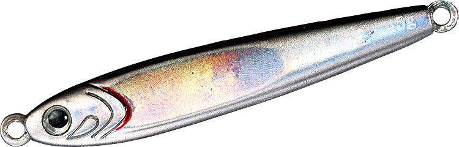

武庫川一文字で釣れてる人が使っている隠れた名作ルアー4選

大阪湾屈指の人気釣り場・武庫川一文字では、ビッグバッカー・ジグパラ・マキマキ・セットアッパーといった定番ルアーがよく釣れる一方で、多くの人が同じルアーを投げているぶん、魚が見慣れてしまうこともあります。
この記事では、メタルバイブ・メタルジグ・ブレードジグ・ミノーの4ジャンルごとに、まず投げたい定番と、状況が変わった時に持ち替えたい隠れた名作を紹介します。定番を否定するのではなく、「定番＋この1本」で釣れる時間を長くするための使い分けです。
目次
メタルバイブレーション
ビッグバッカー107 ＋ アイアンマービー109
定番：ビッグバッカー107（ジャッカル）

画像出典:ジャッカル公式HP
武庫川一文字でもよく見かけるロングメタルバイブ。107mmのボディが生むミノーのようなナチュラルアクションと3フック仕様で、青物・サワラに幅広く対応する実力派です。27gで投げやすく、メタルバイブの1本目にまず持っておきたいルアーです。
- メーカー
- JACKALL（ジャッカル）
- 全長／自重
- 107mm／27g
- 価格
- 1,331円（税込）

🔄 こんな場面は持ち替えどき
そのうえで、「潮が速くてレンジが浮いてしまう」「日中で反応が渋くなった」「風でラインがフックに絡むトラブルが続く」と感じたら、重めでライン絡みに強いアイアンマービー109に持ち替えると、もう一段粘れる。
名作：アイアンマービー109（エバーグリーン）

画像出典:エバーグリーン公式HP
「回らない・絡まない」をコンセプトに、ライン絡みのストレスを極限まで減らすことにこだわって設計された鉄板バイブ。スリムなテール形状・低重心ウエイト・フックアイの形まで、トラブルを減らすために作り込まれています。
使い方は、朝マズメの高活性時はリアアイに付けてミディアムリトリーブ。日中の渋い時間はフロントアイに付け替えて、スローリトリーブのI字スイムで見せるか、デッドスローからの高速巻きでリアクションを狙います。フォールでのバイトも多いので、ポーズを入れるのも効果的です。
- メーカー
- EVERGREEN（エバーグリーン）
- 全長／自重
- 109mm／37g
- アイ
- リアアイ（タイトウォブリング）／フロントアイ（I字〜超タイトウォブリング）
- 価格
- 1,595円（税込）

✨ 武庫川一文字でハマる理由
37gの重さは潮の速い日でもレンジをキープしやすく、ボトム付近のヒラメ・マゴチまで狙えるのも一文字向きのポイントだ。
メタルジグ
ジグパラショート ＋ TGベイト
定番：ジグパラショート（メジャークラフト）

画像出典:メジャークラフト公式HP
手ごろな価格で開けてすぐ使えて、飛距離も十分。ショアジギングの入門ジグとして不動の地位を持つ定番中の定番で、武庫川一文字でもとてもよく見かけます。カラーやウエイトが豊富なので、根掛かりを気にせず攻められるのも強みです。
- メーカー
- Major Craft（メジャークラフト）
- ウエイト
- 20g／30g／40g／50g／60g
- 価格
- オープン価格

🔄 こんな場面は持ち替えどき
そのうえで、「ナブラが立っているのにジグを無視される」「青物が小さなベイトを偏食している」「潮が速くてボトムが取りにくい」といった場面では、同じ重さでもシルエットが小さく沈みの速いTGベイトに持ち替えると、口を使わせやすくなる。
名作：TGベイト（ダイワ）

画像出典:DAIWA公式HP
「より小さいシルエットで重いジグを」というニーズに特化したタングステン製メタルジグ。タングステンは鉛より比重が高いので、同じ重さでもジグパラショートよりひと回り以上ボディが小さくなります。
使い方はワンピッチジャークがメイン。ジャーク後のフォールで左右非対称ボディがひらひらと不規則に沈み、この動きが追ってきた青物の食わせの間になります。TGベイトが「よく釣れるジグ」として長く支持されている理由は、このフォールアクションにあります。
- メーカー
- DAIWA（ダイワ）
- ウエイト／全長
- 30g（55mm）／45g（64mm）／60g（68mm）ほか
- 素材
- タングステン
- 価格
- 1,980円〜（30g・税込）

✨ 武庫川一文字でハマる理由
沈みが速いので潮の速い日でもボトムを取りやすく、コンパクトなボディで遠くのナブラまで届きやすいのも一文字で心強いポイントだ。
ブレードジグ
ジャックアイマキマキ ＋ Zブレード
定番：ジャックアイマキマキ（ハヤブサ）

画像出典:ハヤブサ公式HP
ブレードジグの定番として、武庫川一文字でも長く実績を積んできた1本。巻くだけでブレードがフラッシングし、高速巻きのアクティブな動きで青物・サワラを広範囲から寄せる力は本物です。
- メーカー
- HAYABUSA（ハヤブサ）
- ウエイト
- 20g／30g／40g／60g／80g
- 価格
- 1,045円〜1,320円（税込）

🔄 こんな場面は持ち替えどき
そのうえで、「追ってくるけど食わない」「時合いが終わって反応が落ちた」「ストップを入れた瞬間に食わせたい」と感じたら、フォール中もブレードが回り続けるZブレードに持ち替えると、もう一段食わせられる。
名作：Zブレード（ジーク）

画像出典:ジーク公式HP
比重約6.8の亜鉛合金を使ったブレードジグ。鉛より比重が低い素材で、同じ重さの鉛系ブレードジグよりゆっくり沈みます。ポイントはフォール中もブレードが回転し続けること。巻いている時だけでなく、沈めている間もアピールし続けます。
使い方はリフト&フォールがベスト。ボトムを取ってからロッドを持ち上げ、フリーフォールでゆっくり沈めます。ポーズを長めにとると、フォール中のバイトを拾いやすくなります。
- メーカー
- Zeake（ジーク）
- ウエイト
- 20g／30g／40g／60g／80g
- 素材
- 亜鉛合金
- 価格
- 935円〜1,265円（税込）

✨ 武庫川一文字でハマる理由
マキマキで反応が消えた渋い時間帯の切り札として、タックルボックスに入れておきたい1本だ。
ミノー
セットアッパー125S-DR ＋ サスケ140真裂波
定番：セットアッパー125S-DR（ダイワ）

画像出典:DAIWA公式HP
サゴシ・ハマチ狙いのショア青物で絶大な人気を誇るシンキングミノー。重さを活かした飛距離と、少し深めのレンジまで探れる泳ぎで、武庫川一文字でも実績の高い1本です。
- メーカー
- DAIWA（ダイワ）
- 全長／自重
- 125mm／26g
- 価格
- 2,420円（税込）

🔄 こんな場面は持ち替えどき
そのうえで、朝夕マズメに青物が上ずって水面付近を意識し始めたら、浮き上がりながら誘えるフローティングのサスケ140真裂波に持ち替えると、表層の青物にしっかり合わせられる。
名作：サスケ140真裂波（ima）

画像出典:アイマ公式HP
「キングオブソルトウォーターミノー」として愛され続ける裂波シリーズのフラッグシップ。磁石の反発力を使った重心移動システム「MRD」を搭載し、23gのフローティングながら最長飛距離75mを実現しています。
使い方はスロー〜ミディアムのただ巻きがメイン。ラインを張って巻けば60〜100cmのレンジをキープし、止めると浮き上がります。この浮き上がる瞬間にバイトが集中するので、巻きと止めを組み合わせて誘いましょう。
- メーカー
- ima（アイマ）
- 全長／自重
- 140mm／23g
- タイプ
- フローティング（レンジ60〜100cm）
- 価格
- 2,640円（税込）

✨ 武庫川一文字でハマる理由
MRDで着水後の立ち上がりも速く、ナブラ撃ちの即戦力になる。一文字ではシンキングミノーほど投げている人が多くないので、スレた魚にも新鮮に映りやすいのもポイントだ。
4ジャンルのローテーション
定番を捨てる必要はありません。まず定番で広く探って反応を確かめ、「なぜか食わない」状況になった時に名作の1本を投入するのが効率的な使い方です。
「定番＋この1本」の2本体制がそろえば、状況の変化に対応できる引き出しが一気に増えます。周りが釣れずに首をかしげている時こそ、持ち替えの1本が釣れる差になります。